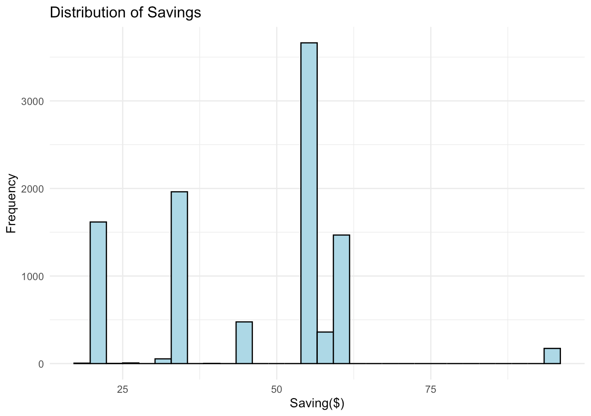
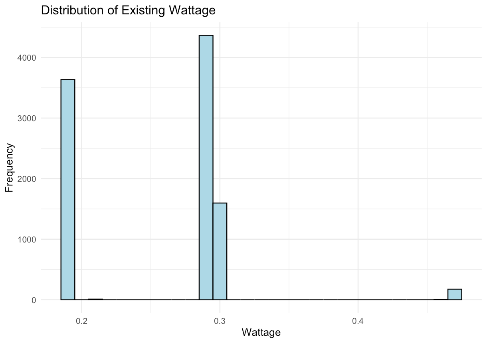

Introducetion of the data & biases in the data
This analysis uses the Street Light Retrofits 2014 dataset from Boston's open data portal. The dataset tracks 9,789 street lights that the city converted to LEDs in 2014, replacing older Sodium and Mercury vapor lamps. For each light, we have the technical details (how much power it used before and after), where it's located, how much money the city saves annually, and when the work was done.
That said, this data has some important limitations. The most obvious is that we're only looking at lights that actually got converted - we don't know anything about lights that were skipped or postponed, which could tell us something about why certain areas were prioritized over others. Speaking of priorities, we also don't know if some neighborhoods got upgraded first for reasons that aren't in the data (maybe political pressure, available funding, or just easier infrastructure). The cost savings assume electricity rates stayed constant throughout the year, which probably isn't quite right. And finally, while we can measure energy savings down to the watt, we have no idea whether people actually like these new lights or if they're brighter, dimmer, or a different color than what was there before.
Summary Statistics
Two Quantatitive Statistics
Summary Statistics for Existing Wattage

Description/context here...
Summary Statistics for Savings

Description/context here...
Two ordinal Statistics
Summary Statistics for New Size
Description/context here...
Summary Statistics for Existing Lumen Sizes

Description/context here...
Two Categorical Statistics
Summary Statistics for District

Description/context here...
Summary Statistics for Type of Old lights

Description/context here...
Variable Distribution/Frequency
Quantitative Variables
Distribution of Existing Wattage

Description/context here...
Distribution of Annual Savings

Description/context here...
Ordinal Variables
Frequency of New LED Wattage Sizes

Description/context here...
Frequency of Existing Brightness Levels

Description/context here...
Categorical Variables
Distribution of Street Lights by District

Description/context here...
Frequency of Old Light Technology Types

Description/context here...
Exploring Relationships Between Variables
These visualizations investigate potential connections between different aspects of the street light retrofits.
1. Do certain neighborhoods save more money?
Annual Cost Savings by Boston District

This boxplot compares cost savings across different Boston neighborhoods. We can see that
2. Does higher old wattage lead to more energy savings?
Relationship Between Old Wattage and Energy Savings

This scatter plot reveals the relationship between the power consumption of old lights and the annual energy saved.
3. Which old light technology was most wasteful?
Cost Savings by Old Light Technology Type
Comparing different old light technologies shows [describe which type saves more, the distribution differences, etc.]
Testable Hypotheses
Based on the exploratory data analysis, three testable hypotheses emerged:
Hypothesis 1: Geographic Variation in Savings
Statement: Certain Boston districts have significantly higher average cost savings from LED retrofits than others.
How EDA led to this: The boxplot comparing savings across districts (see "Annual Cost Savings by Boston District" above) revealed visible differences in median savings between neighborhoods, suggesting geographic patterns in retrofit efficiency.
Statistical Test: One-way ANOVA to compare mean savings across districts (α = 0.05)
Hypothesis 2: Technology Type Impact
Statement:.
How EDA led to this: The comparison of savings by old light type (see "Cost Savings by Old Light Technology Type" above) showed distinct distributions between technology types, indicating some old technologies were more wasteful than others.
Statistical Test: Independent samples t-test or ANOVA (α = 0.05)
Hypothesis 3: Wattage-Savings Relationship
Statement: There is a positive linear relationship between existing light wattage and energy (kWh) saved annually.
How EDA led to this: The scatter plot of old wattage vs. energy savings (see "Relationship Between Old Wattage and Energy Savings" above) suggests a potential positive correlation, indicating higher-wattage old lights produce greater energy savings when replaced.
Statistical Test: Pearson correlation coefficient and linear regression (α = 0.05)